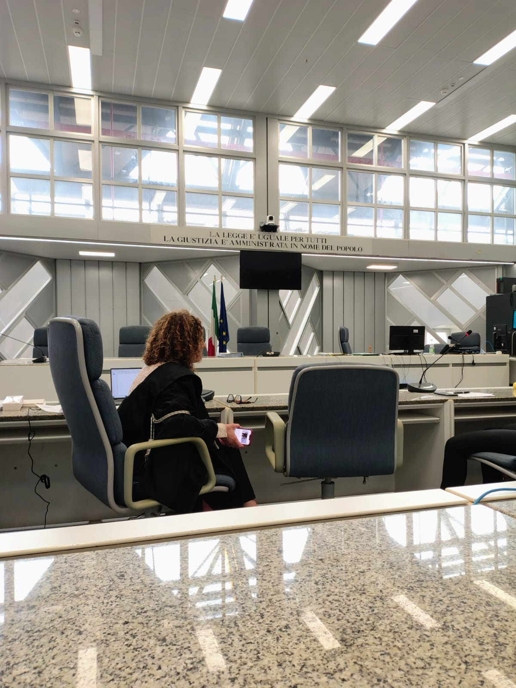

Educazione Civica
Legalità, Diritti e Cittadinanza
Il nostro percorso oltre i banchi di scuola
Il percorso di Educazione Civica di quest'anno è stato una vera e propria finestra sul mondo reale. Spesso si pensa alla cittadinanza o alla legalità come a concetti astratti da studiare sui libri, ma le attività che abbiamo fatto ci hanno dimostrato il contrario. Abbiamo affrontato due grandi temi che toccano da vicino la nostra vita di tutti i giorni e il nostro futuro: da un lato il funzionamento della giustizia e la tutela dei diritti dei cittadini, dall'altro il potere dell'informazione e i rischi legati alla propaganda e alla manipolazione mediatica.
A tu per tu con la giustizia: l'esperienza delle Camere Penali
L'esperienza più forte ed emozionante è stata sicuramente il progetto legato alle Camere Penali, che ci ha portato a vivere da vicino il mondo della giustizia. Non si è trattato solo di una lezione teorica: abbiamo avuto l'opportunità di andare al Palazzo di Giustizia di Ancona per assistere a vere udienze e a processi penali e civili reali. Vedere dal vivo la dinamica dell'aula, con il Giudice, il Pubblico Ministero e gli Avvocati difensori, ci ha fatto capire come funziona la macchina giudiziaria e quanto sia fondamentale il rispetto delle regole per garantire a chiunque un giusto processo.
Il momento più interessante, però, è stato quando ci siamo messi in gioco in prima persona. Abbiamo partecipato a una vera e propria simulazione di un processo penale, dove ognuno di noi ha interpretato un ruolo: chi i giudici, chi gli avvocati, chi i testimoni. Trovarci dentro quelle dinamiche ci ha costretto a ragionare sul valore delle prove, sulla responsabilità delle parole e, soprattutto, sul principio costituzionale della presunzione di innocenza. È stato un esercizio incredibile di empatia e di logica, che ci ha fatto capire quanto sia delicato e importante il compito di giudicare o difendere qualcuno.

Informazione e potere: il peso della propaganda
Il secondo pilastro del nostro percorso ha riguardato un tema caldissimo per la nostra generazione: la propaganda e la manipolazione dell'informazione. Viviamo immersi nei social e bombardati da notizie ogni secondo, ma raramente ci fermiamo a riflettere su come queste notizie vengano costruite e veicolate. Durante l'anno abbiamo analizzato i meccanismi con cui la propaganda e le fake news riescono a orientare l'opinione pubblica, facendo leva sulle emozioni, sulle paure e sui pregiudizi delle persone.
Abbiamo capito che la manipolazione non è un fenomeno nato con internet — basti pensare alla propaganda dei totalitarismi del Novecento studiata in storia — ma che le tecnologie digitali e gli algoritmi di oggi l'hanno resa infinitamente più pervasiva e veloce. Riconoscere un contenuto manipolato o un "deep fake" richiede uno sforzo continuo, uno spirito critico che va allenato ogni giorno verificando le fonti e non fermandosi ai titoli acchiappa-clic.
Tutti questi rischi legati alla rete si collegano strettamente anche a quanto abbiamo affrontato nel programma di GPOI. Studiando l'organizzazione aziendale e la gestione dei dati, abbiamo infatti approfondito l'importanza della privacy online e della protezione delle informazioni personali. Capire come funzionano le normative e conoscere il ruolo del Garante della Privacy ci ha fatto rendere conto che la tutela dei nostri dati non è solo un obbligo burocratico per le imprese, ma un diritto fondamentale per noi cittadini per difenderci da usi distorti e manipolatori della tecnologia.